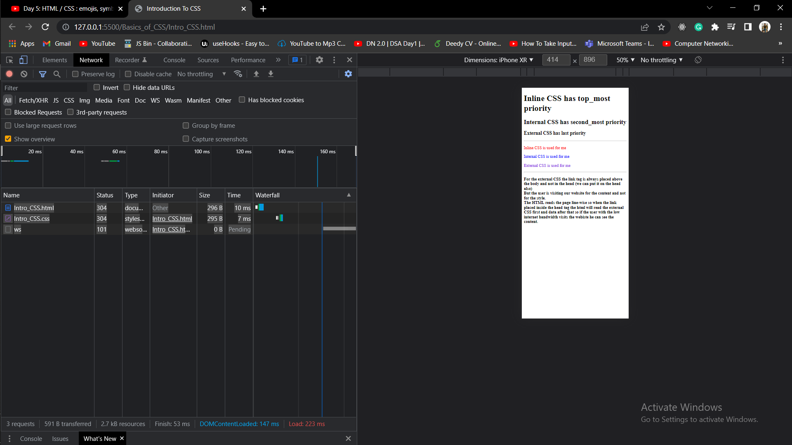

Inline CSS is used for me
Internal CSS is used for me
External CSS is used for me
For the external CSS the link tag is always placed above the body and
not in the head (we can put it on the head also)
But the user is
visiting our website for the content and not for the style.
The
HTML reads the page line-wise so when the link placed inside the head
tag the html will read the external CSS first and data after that so if
the user with the low internet bandwidth visits the webiste he can see
the content.
But if we have to make our website for the designers than we have to put the link tag inside the head.
